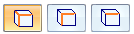
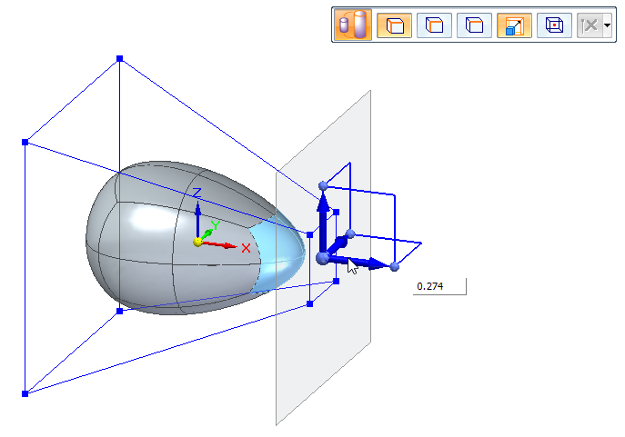

Scale a subdivision model
-
In the Subdivision Modeling environment, choose the Home tab→Modify group→Scale command
 .
. -
Select the elements to scale. You can click any elements of the body cage: faces, edges, or vertices.
-
On the command bar, click a scale direction button: 3 Axes Scaling, Planar Scaling, or Linear Scaling.

-
If you selected planar or three-axis scaling, also select or clear the Uniform
 scaling option.
scaling option. -
Specify the origin of scale—The system places the scale origin at the center of the select set, but you can drag the center knob of the steering wheel to any keypoint in the cage body.
If you move the steering wheel, recenter the scale origin to the center of the selection set by doing either of the following:
-
Double-click the origin (center knob) of the steering wheel.
-
On the command bar, click Recenter
 .
.
-
-
To begin scaling dynamically, click+drag one of the scale axes on the steering wheel. For precision scaling, type a scale value. If you are using non-uniform scaling, press the Tab key to move between axes to type new values for each axis. When scaling dynamically, click to finalize the scale, and then select another axis if you want.
Valid scale values are between 0.001 and 100.

-
Right-click to complete the command.
How do I
Subdivision Modeling workflowMove cage elements
Move using Quick Move
Use symmetric mode in Subdivision Modeling
Split subdivision model faces
Split faces with offset
Offset cage faces
Connect cage faces or edges with a bridge
Delete and fill cage faces
Align a shape to a curve
Learn more
Introduction to Subdivision ModelingUsing PathFinder with subdivision models
Working with cage elements
Creating subdivision features
Working with subdivision features
Moving and rotating cage elements
Look up more details
Subdivision Modeling commandBox command in Subdivision Modeling
Box command bar
Cylinder command in Subdivision Modeling
Cylinder command bar
Sphere command in Subdivision Modeling
Sphere command bar
Torus command
Torus command bar
Scale command in Subdivision Modeling
Blend command
Show Blend Values command
Split command
Split with Offset command
Bridge command
Align to Curve command
Cage Style command